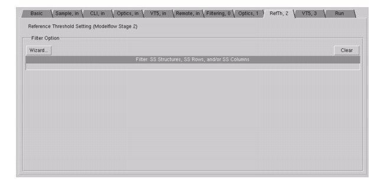

This procedure
describes how to use the optional Reference Threshold optimization
filter.
By default, when the reference threshold is
optimized it uses all the structures. It is ignored if maskwriter
optimization is enabled.
Note: By default, not
specifying anything in this tab selects all the test structures.
When you select at least one structure in this tab, all structures
that are not selected are not optimized.
Procedure
- In VT5 Center, click the RefTh, 2 tab.
Figure 1. VT5 Center GUI
(RefTh, 2 Tab)
- Click the Wizard button
to select one or more test structures in Stage 2 to optimize the reference
threshold on; during the run, VT5 Center searches for the value
of Imax against the reference threshold for these test structures.
If you do not specify anything in this stage, VT5 Center uses the
nominal reference threshold for all structures.
VT5 Center takes its Stage
2 filters from the global spreadsheet, as originally filtered in Stage
0.
- Proceed to “Setting Optimization for the VT5 Model”.